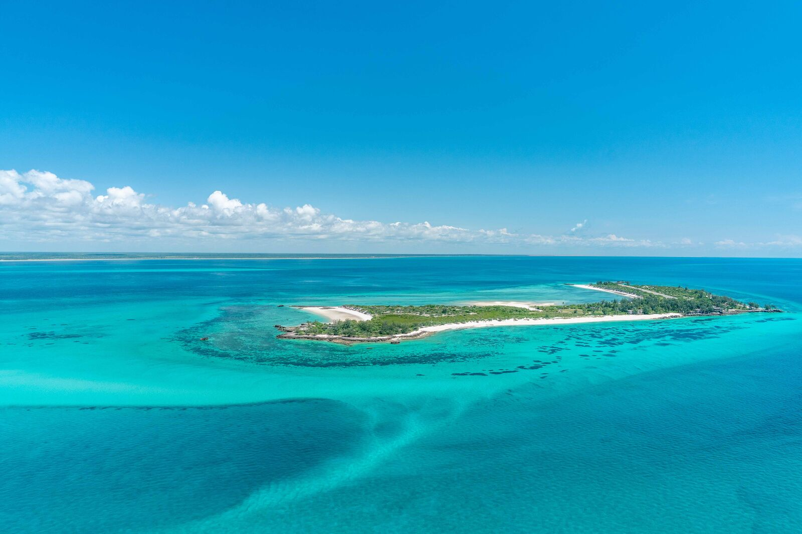
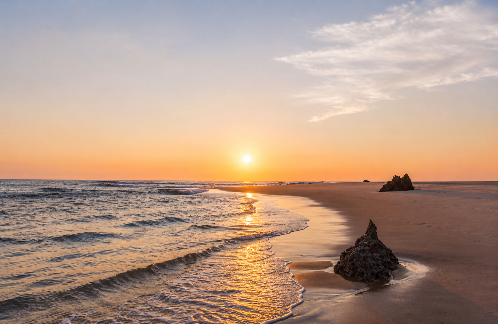
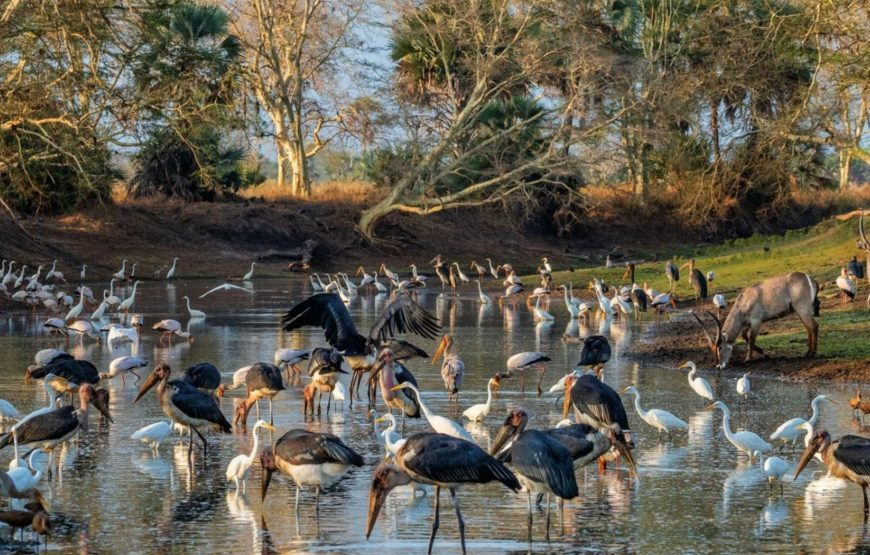
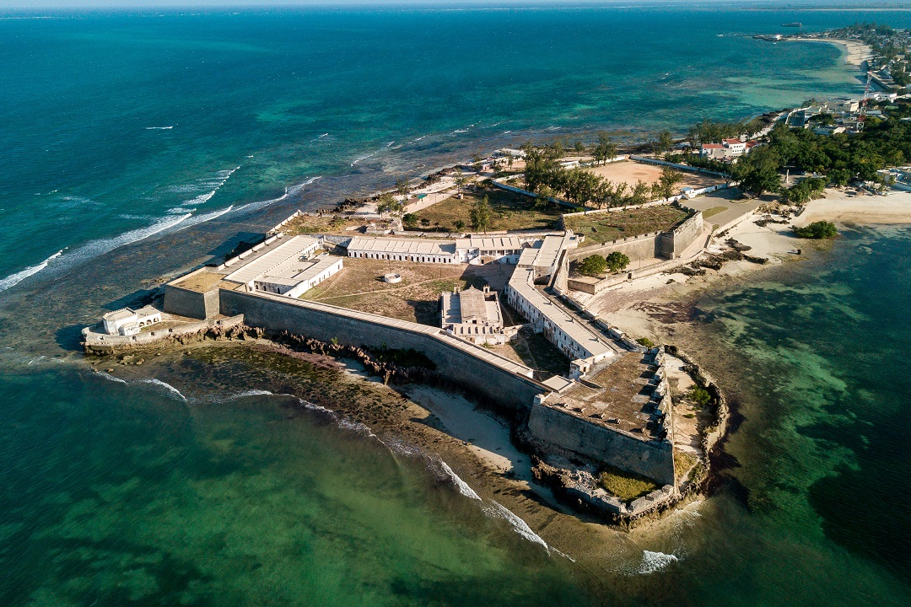
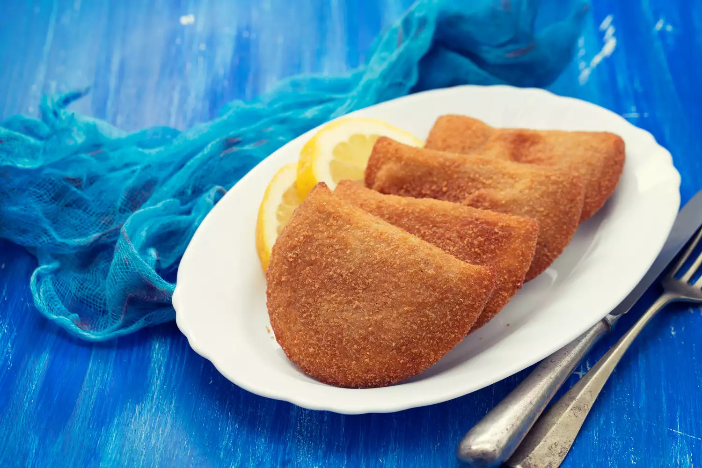
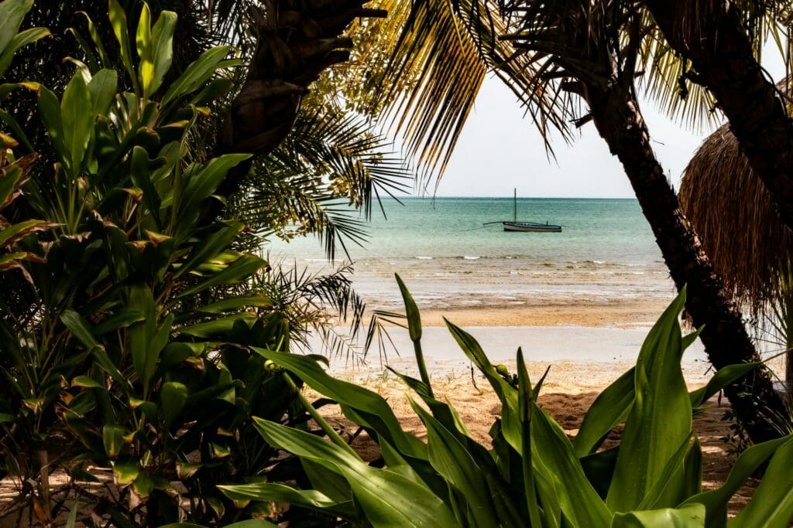
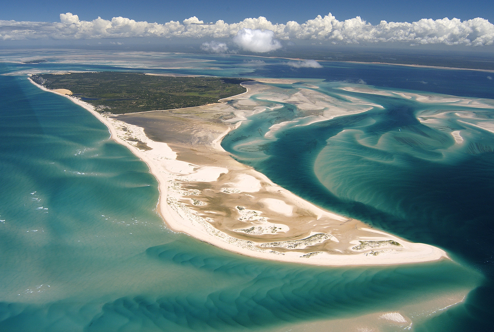
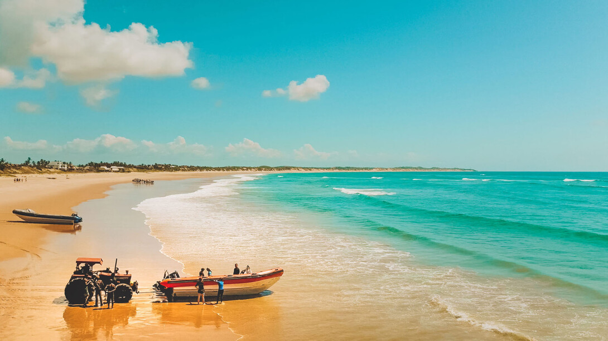
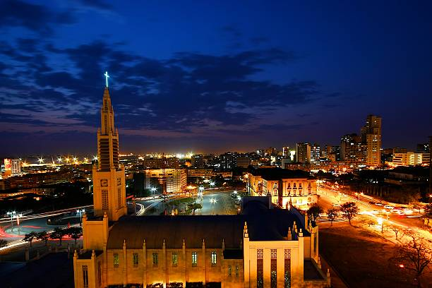
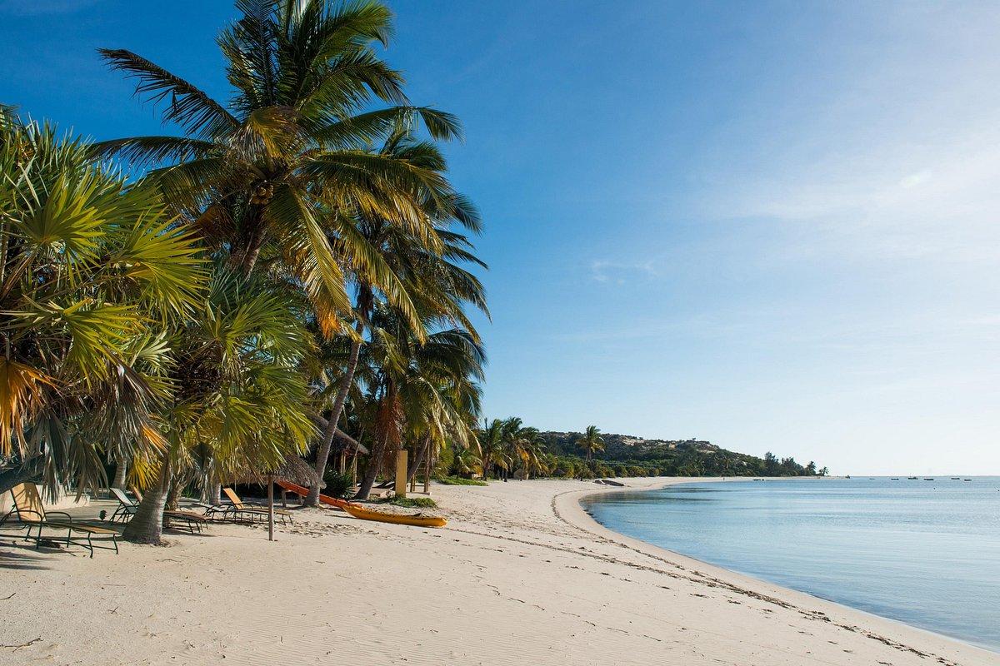

01
Praias e ilhas
Uma extensa costa banhada pelo Oceano Índico, com praias, ilhas e águas cristalinas para relaxar e praticar esportes aquáticos.

Entre praias paradisíacas, natureza exuberante, história, cultura e experiências inesquecíveis, Moçambique oferece uma viagem para cada tipo de viajante.
DESCUBRA MAIS
A Ways 2 Africa é uma agência de viagens fictícia criada para apresentar Moçambique como um destino turístico completo, diverso e surpreendente.
Nossa proposta é conectar cada viajante a experiências que combinem com seus interesses, desde momentos de descanso à beira-mar até aventuras, descobertas culturais e experiências de luxo.
Não existe uma única maneira de viajar. Cada pessoa tem seus próprios interesses, seu próprio ritmo e sua própria ideia de uma viagem perfeita.
Por isso, na W2A, a sua jornada começa com as suas escolhas.
Um país. Muitas formas de viajar.

Uma extensa costa banhada pelo Oceano Índico, com praias, ilhas e águas cristalinas para relaxar e praticar esportes aquáticos.

Parques e áreas naturais onde é possível conhecer a fauna africana e viver experiências de safári.

Cidades, construções históricas, mercados, manifestações culturais e a Ilha de Moçambique, Patrimônio Mundial da UNESCO.

Influências africanas, portuguesas e indianas, com frutos do mar, especiarias e pratos tradicionais.

Descanso, aventura, cultura, natureza e experiências sofisticadas podem coexistir em uma única viagem.
Diferentes estilos. Diferentes ritmos. Uma mesma vontade de descobrir.
7 dias e 6 noites · 2 pessoas
Praias, privacidade, gastronomia e experiências românticas no litoral de Moçambique.

BAZARUTO · EXCLUSIVIDADEFamília · 4 pessoas
Conforto, exclusividade e experiências especiais para toda a família.

TOFO · MAR7 dias e 6 noites · 6 pessoas
Uma viagem para compartilhar experiências e aproveitar Moçambique em grupo.
7 dias e 6 noites
Safári, natureza, mar e experiências ao ar livre para quem quer explorar.
7 dias e 6 noites
Uma viagem pela história, arte, arquitetura e gastronomia de Moçambique.

MAPUTO · LIBERDADESolo ou família · 7 dias
Mais liberdade, menos custos: hospede-se de forma econômica e escolha suas experiências no caminho.
Sete lugares, sete maneiras de viver Moçambique.
História, arquitetura, mercados, gastronomia e vida urbana.

02A porta de entrada para as águas do Arquipélago de Bazaruto.
Praias, dunas, bancos de areia, snorkeling e experiências exclusivas.
Villas, praias, mar azul e experiências sofisticadas.
Vida marinha, praia, esportes aquáticos e atmosfera descontraída.
Safáris, biodiversidade, conservação e natureza.
História, patrimônio, arquitetura, cultura e gastronomia.
Não encontrou exatamente o que estava procurando? Combine diferentes experiências da W2A e crie um roteiro seu.
Escolha uma ou mais experiências.
Uma combinação equilibrada de mar, cultura e experiências locais.
Escolha uma experiência pronta ou crie uma viagem feita especialmente para você.
As fotos locais são as imagens do projeto. Quando uma imagem local não estiver disponível, a página pode usar uma imagem de fallback do Wikimedia Commons. Os respectivos autores e licenças estão listados no arquivo IMAGE_SOURCES.txt.